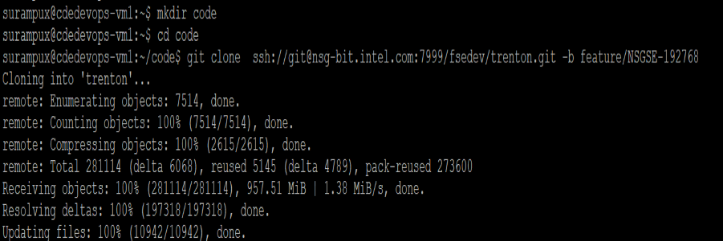

NSGSE-186871
Modify BHB docker image to work as standalone version
Scope of Work:
- Add SSH daemon running as only process
- Test running standalone from local machine:
- use docker to run the image,
- mount volume with sources,
- build and run Concordia basic tests
Steps:
- Create working directory {mdkir code; cd code}
- Clone the trenton inside work directory (git clone ssh://git@nsg-bit.intel.com:7999/fsedev/trenton.git -b feature/NSGSE-192768).

- Build the Docker Image using the file ./ build-bhbhwpp.sh -d.
- Build the Docker Image using the file ./build-bhbswsim.sh -d.
- Move to Working directory - Code
- Clone the ent_ssd_test inside work directory (git clone ssh://git@nsg-bit.intel.com:7999/ise/ent_ssd_test.git -b feature/NSGSE-192768).
- Chage directory {cd ent_ssd_test/spdktest}
- To build spdktest using Docker commands ./build-spdktest-docker.sh concordia-b27a
- To run spdktest using Docker commands ./start-spdktest-docker.sh
- To see the logs: get-log -i 8 -r 0 -f cit.bin